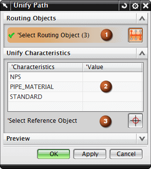

统一路径将根据参考管线布置对象的特性来替换型材与接头的选定特性。如果您需要更新路径中的管线布置对象的特性，以使它们匹配您的参考对象的选定特性时，使用这个命令。

选择管线布置对象 (1)
让您选择需要编辑特性的管线布置对象，您可以使用方法列表来过滤您的选择。
统一特性 (2)
当您选择一个或多个管线布置对象时，它们的特性将会出现在列表中，然后您可以选择哪些特性要被统一。
选择参考对象 (3)
让您指定参考型材或接头，这些对象的特性将被选定的管线布置对象继承。
这个用户默认设置将指定如果未在管线部件库中找到包含指定特性的部件，那么是否在管线中创建虚构符号。
参见文件→实用工具→用户默认设置→管线布置→机械→常规选项卡→为找不到的部件放置虚构符号复选框。
|
应用模块 |
机械管线布置 |
|
工具条 |
机械管线布置→编辑路径下拉菜单→统一路径 |
|
菜单 |
编辑→管线布置路径→统一路径 |
|
快捷菜单 |
右击某个管线布置对象→统一路径 |